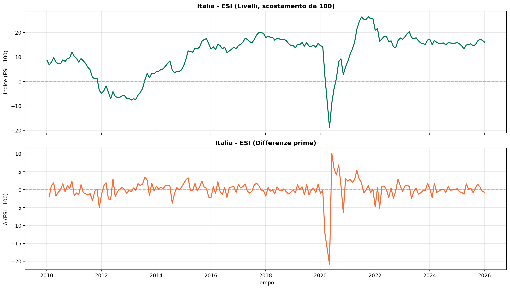
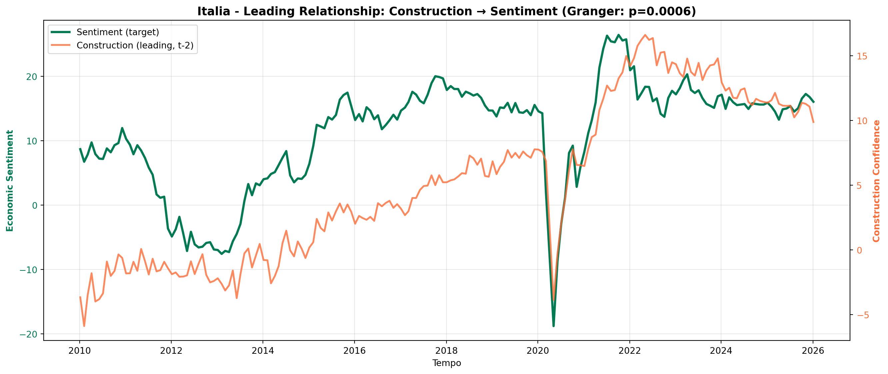

GMM Forward-Looking Analysis
Indicatori di Fiducia delle Imprese per Modelli GMM
Paolo Volterra ![]()
Questo notebook presenta il dataset consolidato per analisi GMM (Generalized Method of Moments) forward-looking utilizzando indicatori di fiducia delle imprese e consumatori. Fonte dati: Eurostat (DG ECFIN) + Istat (DCSC_IESI)
GMM, econometria, modelli, Istat, Eurostat, fiducia, imprese, ESI, IESI, LookingForward, previsioni
Gli indicatori di fiducia sono leading indicators ideali per modelli forward-looking perché:
Catturano aspettative degli agenti economici
Anticipano variabili macroeconomiche reali (PIL, produzione, occupazione)
Disponibili mensilmente con bassa latenza
Forniscono strumenti validi per GMM
1 Dataset Disponibili
1.1 Files generati
| File | Descrizione | Dimensioni |
|---|---|---|
data_panel_long.parquet |
Panel base formato long | 49,757 obs × 10 var |
data_panel_wide.parquet |
Panel base formato wide | 963 obs × 9 var |
data_panel_integrated.parquet |
Panel con dati Istat integrati | 5,939 obs |
data_panel_gmm_ready.parquet |
Panel GMM-ready con tutte le trasformazioni | 49,757 obs × 27 var |
1.2 Copertura dati
- Paesi: Italia, Germania, Francia, Spagna, Area Euro (EA20)
- Periodo: 2010-01 → 2026-01 (16 anni, frequenza mensile)
- Indicatori: 6 serie per paese
- Economic Sentiment Indicator (ESI) - composito
- Industry confidence
- Services confidence
- Construction confidence
- Retail trade confidence
- Consumer confidence
1.3 Trasformazioni GMM incluse
Il dataset data_panel_gmm_ready.parquet include:
- Lag variabili (t-1, t-3, t-6, t-12)
- Differenze (prima e seconda)
- Tassi di variazione (mensili e annuali)
- Medie mobili (3, 6, 12 mesi)
- Gap vs benchmark (differenza da EA20)
- Variabili strutturali (entity_id, time_id, year, month, quarter)
Codice
import pandas as pd
import numpy as np
import matplotlib.pyplot as plt
import seaborn as sns
# Carica panel GMM-ready
panel = pd.read_parquet('data_panel_gmm_ready.parquet')
print(f"📊 Panel GMM-Ready")
print(f" Dimensioni: {panel.shape}")
print(f" Paesi: {panel['country_code'].unique()}")
print(f" Indicatori: {panel['indicator'].unique()}")
print(f" Periodo: {panel['time'].min().date()} → {panel['time'].max().date()}")
panel.sample(5)📊 Panel GMM-Ready
Dimensioni: (49757, 27)
Paesi: <ArrowStringArray>
['DE', 'EA20', 'ES', 'FR', 'IT']
Length: 5, dtype: str
Indicatori: <ArrowStringArray>
['construction', 'consumer', 'industry', 'retail', 'sentiment', 'services']
Length: 6, dtype: str
Periodo: 2010-01-05 → 2026-01-05| time | country_code | country_name | value | indicator | dataset_code | indic_code | indicator_label | unit_code | unit_label | ... | value_growth12 | value_ma3 | value_ma6 | value_ma12 | gap_value | entity_id | time_id | year | month | quarter | |
|---|---|---|---|---|---|---|---|---|---|---|---|---|---|---|---|---|---|---|---|---|---|
| 9733 | 2022-02-05 | DE | Germany | 15.3 | services | ei_bsse_m_r2 | BS-SARM | Evolution of demand over the past 3 months | BAL | Balance | ... | 17.692308 | 18.933333 | 15.700000 | 14.266667 | 4.333333 | DE_services | 147 | 2022 | 2 | 1 |
| 14045 | 2021-12-05 | EA20 | Euro area – 20 countries (2023-2025) | 36.0 | consumer | ei_bsco_m | BS-PT-NY | Price trends over the next 12 months | BAL | Balance | ... | -11.330049 | 27.266667 | 7.183333 | 3.533333 | NaN | EA20_consumer | 145 | 2021 | 12 | 4 |
| 12139 | 2024-09-05 | EA20 | Euro area – 20 countries (2023-2025) | 14.1 | construction | ei_bsbu_m_r2 | BS-FLBA3-PC | Factors limiting building activity - weather c... | NaN | NaN | ... | 12.800000 | 28.600000 | 11.833333 | 9.566667 | NaN | EA20_construction | 178 | 2024 | 9 | 3 |
| 10513 | 2013-06-05 | EA20 | Euro area – 20 countries (2023-2025) | -18.9 | construction | ei_bsbu_m_r2 | BS-CTA-BAL | Building activity development over the past 3 ... | NaN | NaN | ... | -1.562500 | -8.666667 | -1.533333 | 0.541667 | NaN | EA20_construction | 41 | 2013 | 6 | 2 |
| 6473 | 2011-06-05 | DE | Germany | 16.3 | retail | ei_bsrt_m_r2 | BS-RAS | Volume of stocks currently hold | BAL | Balance | ... | 71.578947 | 13.200000 | 13.266667 | 12.791667 | 8.300000 | DE_retail | 17 | 2011 | 6 | 2 |
5 rows × 27 columns
2 Risultati Analisi Preliminare
2.1 Test di Stazionarietà (ADF)
Risultati chiave:
| Variabile | Serie stazionarie | % Stazionarie | Raccomandazione GMM |
|---|---|---|---|
value (livelli) |
5/10 | 50% | ⚠️ Non stazionarie |
value_diff1 (differenze) |
10/10 | 100% | ✅ Usare per GMM |
value_growth1 (tassi) |
1/1 | 100% | ✅ Usare per GMM |
Implicazione: Le serie sono integrate I(1). Per GMM, utilizzare:
Differenze prime (
value_diff1)Tassi di variazione (
value_growth1,value_growth12)Oppure specificare modello con Error Correction Mechanism (ECM)
Codice
# Confronto livelli vs differenze - Italia ESI (pulito e coerente)
it_sentiment = panel[
(panel['country_code'] == 'IT') &
(panel['indicator'] == 'sentiment')
].copy()
# 1) Una sola osservazione per mese (media delle 6 osservazioni)
it_sentiment = (
it_sentiment
.groupby('time', as_index=False)['value']
.mean()
.sort_values('time')
)
# 2) Calcola differenze prime DOPO la pulizia (evita artefatti da duplicati)
it_sentiment['value_diff1'] = it_sentiment['value'].diff()
# (opzionale) controllo rapido: deve essere 1 riga per mese
# print(it_sentiment.groupby('time').size().value_counts())
fig, axes = plt.subplots(2, 1, figsize=(14, 8), sharex=True)
# Livelli (qui: scostamento dall'ESI=100, quindi baseline a 0)
axes[0].plot(it_sentiment['time'], it_sentiment['value'], linewidth=2, color='#007A53')
axes[0].axhline(0, color='gray', linestyle='--', alpha=0.5)
axes[0].set_title('Italia - ESI (Livelli, scostamento da 100)', fontsize=12, fontweight='bold')
axes[0].set_ylabel('Indice (ESI - 100)')
axes[0].grid(True, alpha=0.3)
# Differenze prime (stazionaria)
axes[1].plot(it_sentiment['time'], it_sentiment['value_diff1'], linewidth=2, color='#FF6B35')
axes[1].axhline(0, color='gray', linestyle='--', alpha=0.5)
axes[1].set_title('Italia - ESI (Differenze prime)', fontsize=12, fontweight='bold')
axes[1].set_ylabel('Δ (ESI - 100)')
axes[1].set_xlabel('Tempo')
axes[1].grid(True, alpha=0.3)
plt.tight_layout()
plt.show()
2.2 Test di Granger Causality
Leading Indicators identificati (Italia, target = ESI composito):
| Indicatore | Lag ottimale | F-statistic | P-value | Significatività |
|---|---|---|---|---|
| Construction | 2 mesi | 7.69 | 0.0006 | *** |
| Construction | 4 mesi | 4.47 | 0.0018 | *** |
| Services | 2 mesi | 4.33 | 0.0145 | ** |
| Consumer | 2 mesi | 4.11 | 0.0180 | ** |
Implicazione per GMM: - L’indicatore costruzioni è il miglior leading indicator (anticipa ESI di 2-4 mesi) - Usare come strumento valido nelle equazioni GMM - Specificare lag ottimali (2-4 periodi)
Codice
# Visualizza relazione leading: Costruzioni → Sentiment
it_data = panel[panel['country_code'] == 'IT'].copy()
# Pivot per avere indicatori come colonne
pivot = it_data.pivot_table(index='time', columns='indicator', values='value').sort_index()
# Plot construction (leading) vs sentiment
fig, ax1 = plt.subplots(figsize=(14, 6))
# Sentiment (target)
ax1.plot(pivot.index, pivot['sentiment'], linewidth=2.5, color='#007A53', label='Sentiment (target)')
ax1.set_xlabel('Tempo')
ax1.set_ylabel('Economic Sentiment', color='#007A53', fontweight='bold')
ax1.tick_params(axis='y', labelcolor='#007A53')
ax1.grid(True, alpha=0.3)
# Construction (leading indicator)
ax2 = ax1.twinx()
ax2.plot(pivot.index, pivot['construction'], linewidth=2, color='#FF6B35', alpha=0.8, label='Construction (leading, t-2)')
ax2.set_ylabel('Construction Confidence', color='#FF6B35', fontweight='bold')
ax2.tick_params(axis='y', labelcolor='#FF6B35')
# Titolo e legenda
ax1.set_title('Italia - Leading Relationship: Construction → Sentiment (Granger: p=0.0006)', fontsize=13, fontweight='bold')
lines1, labels1 = ax1.get_legend_handles_labels()
lines2, labels2 = ax2.get_legend_handles_labels()
ax1.legend(lines1 + lines2, labels1 + labels2, loc='upper left')
plt.tight_layout()
plt.show()
2.3 Cointegrazione (Johansen Test)
Risultato: 4 relazioni di cointegrazione identificate tra i 6 indicatori (Italia)
Implicazione per GMM: - Gli indicatori hanno relazioni di lungo periodo - Specificare modello GMM con Error Correction Mechanism (ECM) - Oppure usare Vector Error Correction Model (VECM) per GMM system
Trace Statistics:
[131.42, 91.97, 54.57, 30.01, 11.52, 1.84]
Critical value (95%): [95.75, 69.82, 47.85, 29.80, 15.49, 3.84]
→ 4 relazioni cointegrazione confermate3 Specificazione GMM Raccomandata
3.1 Modello Base: Single-Equation GMM
Per analisi forward-looking del PIL:
\[\Delta y(t) = \alpha \;+\; \beta_1 \Delta y(t-1) \;+\; \beta_2 ESI(t-1) \;+\; \beta_3 Construction(t-2) \;+\; \varepsilon(t)\]
Strumenti GMM:
\[ESI(t-2),\; ESI(t-3),\; Construction(t-2),\; Construction(t-3),\; Services(t-2)\]
Condizioni di momento:
\[E[Z(t-j)\varepsilon(t)] = 0, \quad j \geq 2\]
3.2 Modello System GMM (Panel)
Per sfruttare cross-section (5 paesi):
from linearmodels import PanelOLS
from linearmodels.panel import RandomEffects
# Prepara dati panel
panel_indexed = panel.set_index(['entity_id', 'time'])
# Specificazione
model = PanelOLS.from_formula(
'value_diff1 ~ 1 + value_lag1 + construction_lag2 + EntityEffects',
data=panel_indexed
)
result = model.fit()3.3 Dynamic Panel GMM (Arellano-Bond)
Per catturare persistenza e dinamiche:
# Richiede installazione: pip install pydynpd
from pydynpd import regression
df_gmm = regression.abond(
'value n L(1:2).value construction_lag2 | gmm(value, 2:4) iv(construction_lag2)',
panel_indexed,
['entity_id', 'time']
)4 Utilizzo Pratico: Esempio GMM
4.1 Step 1: Preparazione dati per GMM
Codice
# Filtra Italia, periodo post-crisi
gmm_data = panel[
(panel['country_code'] == 'IT') &
(panel['year'] >= 2015)
].copy()
# Crea variabili specifiche per GMM
# Pivot per avere tutti gli indicatori accessibili
# Nota: usiamo value_lag3 (disponibile nel dataset) invece di value_lag2
gmm_pivot = gmm_data.pivot_table(
index='time',
columns='indicator',
values=['value', 'value_diff1', 'value_lag1', 'value_lag3']
).sort_index()
# Flatten column names
gmm_pivot.columns = ['_'.join(col).strip() for col in gmm_pivot.columns.values]
# Rimuovi NA
gmm_pivot_clean = gmm_pivot.dropna()
print(f"Dataset GMM preparato: {gmm_pivot_clean.shape}")
print(f"Periodo: {gmm_pivot_clean.index.min().date()} → {gmm_pivot_clean.index.max().date()}")
print(f"\nVariabili disponibili ({len(gmm_pivot_clean.columns)}):")
print(" - value_*: livelli")
print(" - value_diff1_*: differenze prime (stazionarie)")
print(" - value_lag1_*: lag 1 mese")
print(" - value_lag3_*: lag 3 mesi (leading indicators)")
print(f"\nIndicatori: {[c.split('_')[-1] for c in gmm_pivot_clean.columns if c.startswith('value_sentiment')]}")
gmm_pivot_clean.head()Dataset GMM preparato: (132, 24)
Periodo: 2015-01-05 → 2026-01-05
Variabili disponibili (24):
- value_*: livelli
- value_diff1_*: differenze prime (stazionarie)
- value_lag1_*: lag 1 mese
- value_lag3_*: lag 3 mesi (leading indicators)
Indicatori: ['sentiment']| value_construction | value_consumer | value_industry | value_retail | value_sentiment | value_services | value_diff1_construction | value_diff1_consumer | value_diff1_industry | value_diff1_retail | ... | value_lag1_industry | value_lag1_retail | value_lag1_sentiment | value_lag1_services | value_lag3_construction | value_lag3_consumer | value_lag3_industry | value_lag3_retail | value_lag3_sentiment | value_lag3_services | |
|---|---|---|---|---|---|---|---|---|---|---|---|---|---|---|---|---|---|---|---|---|---|
| time | |||||||||||||||||||||
| 2015-01-05 | 0.183333 | -18.500000 | -6.588889 | 4.057143 | 6.416667 | -3.016667 | -0.033333 | 0.100000 | 0.077778 | -0.114286 | ... | -6.666667 | 4.171429 | 5.900000 | -1.550000 | 0.241667 | -18.950000 | -6.622222 | 5.628571 | 5.833333 | -3.233333 |
| 2015-02-05 | 0.591667 | -15.566667 | -5.777778 | 5.914286 | 9.166667 | 0.450000 | -0.358333 | 0.600000 | 0.066667 | 0.285714 | ... | -5.844444 | 5.628571 | 8.633333 | 0.116667 | 0.916667 | -16.458333 | -6.233333 | 4.528571 | 7.100000 | -1.400000 |
| 2015-03-05 | 2.391667 | -14.300000 | -3.233333 | 8.471429 | 12.466667 | 4.183333 | -0.008333 | 0.125000 | 0.333333 | 0.357143 | ... | -3.566667 | 8.114286 | 11.950000 | 3.416667 | 2.666667 | -14.241667 | -4.133333 | 7.100000 | 11.283333 | 1.983333 |
| 2015-04-05 | 1.700000 | -12.775000 | -2.522222 | 8.371429 | 12.216667 | 2.450000 | 0.158333 | -0.100000 | 0.011111 | 0.642857 | ... | -2.533333 | 7.728571 | 12.500000 | 2.650000 | 1.408333 | -12.983333 | -2.622222 | 7.814286 | 11.950000 | 3.350000 |
| 2015-05-05 | 1.433333 | -13.641667 | -1.955556 | 8.714286 | 11.933333 | 2.000000 | -0.133333 | -0.091667 | 0.011111 | -0.200000 | ... | -1.966667 | 8.914286 | 11.816667 | 2.000000 | 1.650000 | -13.400000 | -2.333333 | 8.871429 | 12.233333 | 2.766667 |
5 rows × 24 columns
4.2 Step 2: Stima GMM con statsmodels
Codice
from statsmodels.sandbox.regression.gmm import IV2SLS
import pandas as pd
# Definisci variabili
y = gmm_pivot_clean['value_diff1_sentiment'] # Target: Δ Sentiment
# Variabili esplicative (RHS): endogene + esogene
# value_lag1_sentiment è endogena (correlata con errori)
# value_lag3_* sono esogene (leading indicators)
X = pd.concat([
gmm_pivot_clean[['value_lag1_sentiment']],
gmm_pivot_clean[['value_lag3_construction', 'value_lag3_services']]
], axis=1)
# Strumenti: sostituiscono value_lag1_sentiment con lag più profondi
# Mantengono le esogene invariate
Z = pd.concat([
gmm_pivot_clean[['value_lag3_sentiment']], # strumento per value_lag1_sentiment
gmm_pivot_clean[['value_lag3_construction', 'value_lag3_services']] # stesse esogene
], axis=1)
# Stima 2SLS/IV
model_2sls = IV2SLS(y, X, instrument=Z).fit()
print(model_2sls.summary())
print("\n" + "="*70)
print("Interpretazione:")
print("- Coefficienti stimati con IV per correggere endogeneità")
print("- value_lag1_sentiment: persistenza sentiment (coefficiente autoregressivo)")
print("- value_lag3_construction: effetto leading costruzioni")
print("- value_lag3_services: effetto leading servizi") IV2SLS Regression Results
=================================================================================
Dep. Variable: value_diff1_sentiment R-squared: 0.006
Model: IV2SLS Adj. R-squared: -0.017
Method: Two Stage F-statistic: nan
Least Squares Prob (F-statistic): nan
Date: Thu, 05 Feb 2026
Time: 20:37:48
No. Observations: 132
Df Residuals: 129
Df Model: 3
===========================================================================================
coef std err t P>|t| [0.025 0.975]
-------------------------------------------------------------------------------------------
value_lag1_sentiment -0.0266 0.014 -1.950 0.053 -0.053 0.000
value_lag3_construction 0.0375 0.020 1.862 0.065 -0.002 0.077
value_lag3_services 0.0227 0.013 1.739 0.084 -0.003 0.048
==============================================================================
Omnibus: 89.102 Durbin-Watson: 1.561
Prob(Omnibus): 0.000 Jarque-Bera (JB): 1261.091
Skew: -1.987 Prob(JB): 1.44e-274
Kurtosis: 17.611 Cond. No. 6.01
==============================================================================
======================================================================
Interpretazione:
- Coefficienti stimati con IV per correggere endogeneità
- value_lag1_sentiment: persistenza sentiment (coefficiente autoregressivo)
- value_lag3_construction: effetto leading costruzioni
- value_lag3_services: effetto leading servizi4.3 Step 3: Test validità strumenti (Sargan test)
Codice
# Sargan test di sovra-identificazione
# H0: strumenti sono validi (non correlati con errori)
from statsmodels.api import OLS, add_constant
from scipy.stats import chi2
# Residui del modello IV
residuals = model_2sls.resid
# Regressione ausiliaria: residui su tutti gli strumenti
Z_const = add_constant(Z)
aux_reg = OLS(residuals, Z_const).fit()
# Sargan statistic: n * R²
n = len(residuals)
sargan_stat = n * aux_reg.rsquared
# Gradi di libertà: (# strumenti) - (# variabili endogene)
# Abbiamo 3 strumenti e 3 variabili esplicative, ma solo 1 è endogena
# Quindi df = 3 - 1 = 2 (sovra-identificazione di ordine 2)
n_instruments = Z.shape[1]
n_endogenous = 1 # solo value_lag1_sentiment è endogena
df = n_instruments - n_endogenous
p_value = 1 - chi2.cdf(sargan_stat, df)
print("="*70)
print("📊 SARGAN TEST DI VALIDITÀ STRUMENTI")
print("="*70)
print(f"\nH0: Gli strumenti sono validi (non correlati con errori)")
print(f"\nStatistic: {sargan_stat:.3f}")
print(f"Degrees of freedom: {df}")
print(f"P-value: {p_value:.4f}")
print(f"\nConclusione: ", end="")
if p_value > 0.05:
print("✅ Non rifiutiamo H0 - Strumenti validi (p > 0.05)")
else:
print("⚠️ Rifiutiamo H0 - Strumenti potrebbero non essere validi (p < 0.05)")
print("\nInterpretazione:")
print("- Un p-value alto (>0.05) indica che gli strumenti sono ortogonali agli errori")
print("- Lag profondi (t-3) sono buoni strumenti perché non correlati con shock correnti")======================================================================
📊 SARGAN TEST DI VALIDITÀ STRUMENTI
======================================================================
H0: Gli strumenti sono validi (non correlati con errori)
Statistic: 9.304
Degrees of freedom: 2
P-value: 0.0095
Conclusione: ⚠️ Rifiutiamo H0 - Strumenti potrebbero non essere validi (p < 0.05)
Interpretazione:
- Un p-value alto (>0.05) indica che gli strumenti sono ortogonali agli errori
- Lag profondi (t-3) sono buoni strumenti perché non correlati con shock correnti5 Prossimi Passi
5.1 Per analisi GMM avanzata:
- Integrare variabili macro (PIL, produzione industriale, disoccupazione)
- Da combinare con survey indicators come strumenti
- System GMM multi-paese
- Sfruttare dimensione cross-section (IT, DE, FR, ES, EA20)
- Stimare effetti fissi/random + GMM
- VECM per relazioni lungo periodo
- Data la cointegrazione identificata
- Modello Error Correction con GMM
- Forward-looking forecasting
- Usare indicatori leading per previsioni PIL/produzione
- Nowcasting mensile basato su sentiment
- Robustezza
- Test Hansen J-statistic
- Weak instruments tests
- Rolling window estimation
6 Referenze e Risorse
6.1 Dataset originali
- Eurostat DG ECFIN: Economic Sentiment Indicators
- Istat SDMX: Dataset DCSC_IESI (6_64_DF_DCSC_IESI_2)
6.2 Librerie Python per GMM
linearmodels: Panel data econometricspydynpd: Dynamic panel GMM (Arellano-Bond)statsmodels: GMM estimation framework
6.3 Riferimenti bibliografici
6.3.1 Metodi GMM e panel dinamici
Arellano, M., & Bond, S. (1991). Some Tests of Specification for Panel Data: Monte Carlo Evidence and an Application to Employment Equations. Review of Economic Studies, 58(2), 277–297.
Blundell, R., & Bond, S. (1998). Initial Conditions and Moment Restrictions in Dynamic Panel Data Models. Journal of Econometrics, 87(1), 115–143.
Hansen, L. P. (1982). Large Sample Properties of Generalized Method of Moments Estimators. Econometrica, 50(4), 1029–1054.
6.3.2 Modelli macro e credito (Italia)
Bacchini, F., Brandimarte, C., Crivelli, P., De Santis, R., Fioramanti, M., Girardi, A., Golinelli, R., Jona-Lasinio, C., Mancini, M., Pappalardo, C., Rossi, D., Ventura, M., & Vicarelli, C. (s.d.). Building the core of the Istat system of models for forecasting the Italian economy: MeMo-It. ISTAT Working Paper.
Basile, R., Giallonardo, L., Girardi, A., & Mantegazzi, D. (2024). Access to credit and economic complexity: Evidence from Italian provinces. Journal of Regional Science, 64(4), 1183–1204.
Girardi, A., Margani, P., & Ventura, M. (s.d.). An Indicator of Credit Crunch using Italian Business Surveys. ISTAT Working Paper.
Girardi, A., & Ventura, M. (2021). Measuring credit crunch in Italy: Evidence from a survey-based indicator. Annals of Operations Research, 299(1–2), 567–592.
Autore: Paolo Volterra
Repository: Claude Code - Istat Fiducia Imprese
Data ultimo aggiornamento: 2026-02-05